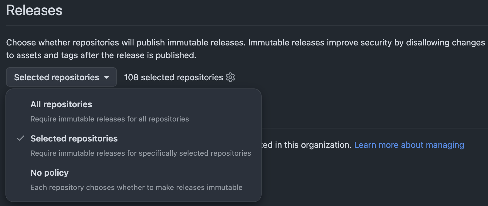
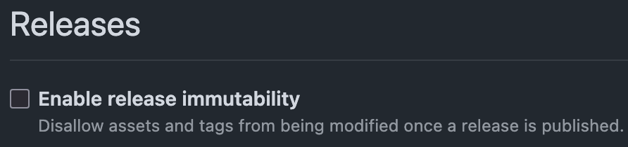

flowchart LR
A(Untrusted inputs) --> B("Workflow<br/>expressions and<br/>shell commands")
B --> C("Third-party<br/>code and<br/>build tools")
C --> D("Tokens, secrets,<br/>caches and release<br/>artefacts")
Zizmor: Static Analysis for GitHub Actions
Patrick Roddy
2026-07-28
Introduction
GitHub Actions
- Dangerous triggers.
- Excessive permissions.
- Mutable dependency.
- Persistent credentials.
- Template injection.
The Problem
A GitHub Actions workflow is a security-sensitive executable program, not just configuration. A compromised step can have access to secrets, repository contents and a write-capable GITHUB_TOKEN.
Teams carefully review hundreds of lines of Python, then approve a twenty-line workflow without much thought.
A Workflow Security Model
- What code are we running?
- Who controls its inputs?
- What authority does it have?
- What state can it read, modify or publish?
Zizmor
zizmor statically analyses the workflow definition to find dangerous relationships between these things, without needing to run the workflow.
It analyses GitHub Actions workflows and action definitions, reporting issues such as template injection, persisted credentials, excessive permissions and unsafe Git references.
- YAML parser: validates YAML syntax.
- Schema validator: validates GitHub Actions syntax.
zizmor: checks for possible workflow exploitation.
Dependencies
Mutable References
A common way to use a GitHub Action is to reference its moving major-version tag. At the time of writing, v7 identifies the latest v7 release.
A more specific approach is to reference the individual patch release. These references resolve to the same release today.
Mutable References
v7andv7.0.1currently resolve to the same commit.v7is a moving compatibility tag.- A release-specific tag could be protected by an immutable release.
- A full SHA identifies the exact Git object without relying on the publisher’s tag policy.
Immutable Releases
An immutable GitHub release protects its associated tag from being moved or deleted and prevents release assets from being modified. It also creates a release attestation covering the tag, commit SHA and assets.
Immutable releases protect what the publisher releases; SHA pinning records exactly what the consumer has reviewed and chosen to run.
Immutable Releases
Organisation (
Settings→Repository→General→Releases)
Immutable Releases
Repository (
Settings→General→Releases)
Since adopting immutable releases, astral-sh/setup-uv has stopped publishing moving major-version tags. It publishes v9.0.0, for example, but no moving v9 tag.
Pinact: Automated Action Pinning
pinact is a CLI tool that converts tagged action references to full SHAs while retaining a human-readable version comment. It can also check whether references are pinned, update them and verify that version annotations match their SHAs. Dependency-update tools such as Renovate can then maintain these pinned references.
Rule: unpinned-uses
By default, unpinned-uses requires all actions to be pinned to a full commit SHA, although this policy can be configured for trusted repositories or namespaces.
Related rules:
Reference integrity
Dependency health
Authority
Permissions Are Part of the Program
Broad permissions increase the potential impact of a compromised step.
Rule: excessive-permissions
Permissions should describe what the job does, rather than what it might conceivably need.
The following rules can help with this:
Untrusted Inputs
Template Injection
The expression is expanded while GitHub is constructing the temporary script. It is not equivalent to safely passing an ordinary string argument.
Rule: template-injection
Keep data as data. Do not let untrusted data become executable code.
Relevant rules:
Trust Boundaries
Events Are Not Merely Scheduling
Triggers determine much more than when the workflow runs, including:
- which repository context is used;
- which workflow definition is loaded;
- what token permissions are available;
- whether the triggering party can influence inputs or checked-out code.
Rule: dangerous-triggers
GitHub advises avoiding pull_request_target where it is unnecessary and warns against combining privileged triggers with untrusted pull-request code.
Relevant rules:
Persistent State
Credentials Survive
Rather than simply doing this.
Rule: artipacked
A release workflow should build from reviewed source and locked dependencies, not from mutable cache state supplied by an earlier, less-trusted workflow.
Related rules:
Demo
Original Code
cat .github/workflows/demo.yaml
Initial Zizmor Run
zizmor .github/workflows/demo.yaml
INFO zizmor: 🌈 zizmor v1.28.0
INFO audit: zizmor: 🌈 completed .github/workflows/demo.yaml help[artipacked]: credential persistence through GitHub Actions artifacts
--> .github/workflows/demo.yaml:12:9
|
12 | - uses: actions/checkout@v7
| ^^^^^^^^^^^^^^^^^^^^^^^^^ does not set persist-credentials: false
|
= note: audit confidence → Low
= note: this finding has an auto-fix
error[dangerous-triggers]: use of fundamentally insecure workflow trigger
--> .github/workflows/demo.yaml:3:1
|
3 | / on:
4 | | pull_request_target:
| |______________________^ pull_request_target is almost always used insecurely
|
= note: audit confidence → Medium
error[template-injection]: code injection via template expansion
--> .github/workflows/demo.yaml:15:24
|
15 | run: echo "${{ github.event.pull_request.title }}"
| --- ^^^^^^^^^^^^^^^^^^^^^^^^^^^^^^^ may expand into attacker-controllable code
| |
| this run block
|
= note: audit confidence → High
= note: this finding has an auto-fix
error[unpinned-uses]: unpinned action reference
--> .github/workflows/demo.yaml:12:15
|
12 | - uses: actions/checkout@v7
| ^^^^^^^^^^^^^^^^^^^ action is not pinned to a hash (required by blanket policy)
|
= note: audit confidence → High
7 findings (3 suppressed, 2 unsafe fixes): 0 informational, 1 low, 0 medium, 3 highUsing Pinact
pinact run .github/workflows/demo.yaml
Attempt to Autofix
zizmor --fix=safe .github/workflows/demo.yaml
INFO zizmor: 🌈 zizmor v1.28.0
INFO audit: zizmor: 🌈 completed .github/workflows/demo.yaml warning[artipacked]: credential persistence through GitHub Actions artifacts
--> .github/workflows/demo.yaml:12:9
|
12 | - uses: actions/checkout@3d3c42e5aac5ba805825da76410c181273ba90b1 # v7.0.1
| ^^^^^^^^^^^^^^^^^^^^^^^^^^^^^^^^^^^^^^^^^^^^^^^^^^^^^^^^^^^^^^^^^^^^^^^^ does not set persist-credentials: false
|
= note: audit confidence → Low
= note: this finding has an auto-fix
error[dangerous-triggers]: use of fundamentally insecure workflow trigger
--> .github/workflows/demo.yaml:3:1
|
3 | / on:
4 | | pull_request_target:
| |______________________^ pull_request_target is almost always used insecurely
|
= note: audit confidence → Medium
error[template-injection]: code injection via template expansion
--> .github/workflows/demo.yaml:15:24
|
15 | run: echo "${{ github.event.pull_request.title }}"
| --- ^^^^^^^^^^^^^^^^^^^^^^^^^^^^^^^ may expand into attacker-controllable code
| |
| this run block
|
= note: audit confidence → High
= note: this finding has an auto-fix
6 findings (3 suppressed, 2 unsafe fixes): 0 informational, 0 low, 1 medium, 2 high
No fixes available to apply (2 held back by safe mode). Use --fix=unsafe-only or --fix=all to apply unsafe fixes.Fixing the Active Findings
git diff .github/workflows/demo.yaml
name: Check pull request
on:
- pull_request_target:
+ pull_request:
permissions: write-all
@@ -10,6 +10,10 @@ jobs:
runs-on: ubuntu-latest
steps:
- uses: actions/checkout@3d3c42e5aac5ba805825da76410c181273ba90b1 # v7.0.1
+ with:
+ persist-credentials: false
- name: Print pull request title
- run: echo "${{ github.event.pull_request.title }}"
+ run: echo "${GITHUB_EVENT_PULL_REQUEST_TITLE}"
+ env:
+ GITHUB_EVENT_PULL_REQUEST_TITLE: ${{ github.event.pull_request.title }}Pedantic Mode
zizmor --pedantic .github/workflows/demo.yaml
The default persona prioritises actionable security findings; pedantic mode also reports broader hardening and maintainability issues.
INFO zizmor: 🌈 zizmor v1.28.0
INFO audit: zizmor: 🌈 completed .github/workflows/demo.yaml error[excessive-permissions]: overly broad permissions
--> .github/workflows/demo.yaml:6:1
|
6 | permissions: write-all
| ^^^^^^^^^^^^^^^^^^^^^^ uses write-all permissions
|
= note: audit confidence → High
info[anonymous-definition]: workflow or action definition without a name
--> .github/workflows/demo.yaml:9:3
|
9 | check:
| ^^^^^ this job
|
= note: audit confidence → High
= tip: use 'name: ...' to give this job a name
help[concurrency-limits]: insufficient job-level concurrency limits
--> .github/workflows/demo.yaml:3:1
|
3 | / on:
4 | | pull_request:
| |_______________^ workflow is missing concurrency setting
...
9 | check:
| ----- job affected by missing workflow concurrency
|
= note: audit confidence → High
3 findings: 1 informational, 1 low, 0 medium, 1 highConclusions
Treat Workflows as Production Code
- Pin what you use.
- Limit what it can access.
- Separate trusted and untrusted input.
- Do not trust mutable build state.
- Automate the review with
zizmor.
Resources and Thanks
- Thanks to David for telling me about
zizmor. - Thanks to MIRSG for letting me try it across many repos, used in our centralised
prekhooks. - Astral have a good blog on open source security written by
zizmor’s author William Woodruff. zizmorcan be installed from Homebrew, PyPI, crates.io, Docker, …- https://docs.zizmor.sh/audits is a great resource to understand what each rule looks for, what the problem is, and how to fix it.
See you soon from Leeds 😢

Zizmor: Static Analysis for GitHub Actions